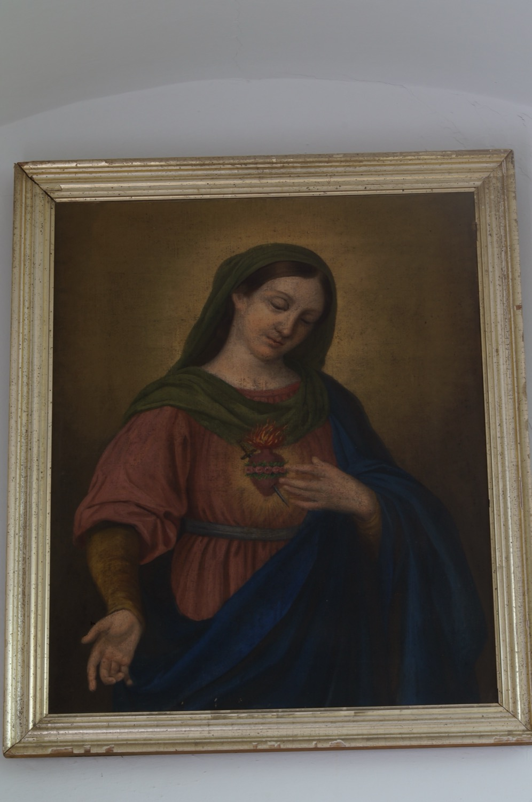

El Inmaculado Corazón de María simboliza el amor de la Virgen por Dios y por toda la humanidad. Este cuadro lo representa con sus elementos más característicos: rodeado de rosas, símbolo de la pureza de María; coronado de llamas, que representan el amor ardiente de la Virgen hacia Dios y la humanidad; y atravesado por una espada, en recuerdo de la profecía del viejo Simeón, quien anunció a María que una espada atravesaría su alma, refiriéndose a los dolores y sufrimientos que sufriría junto a su hijo..